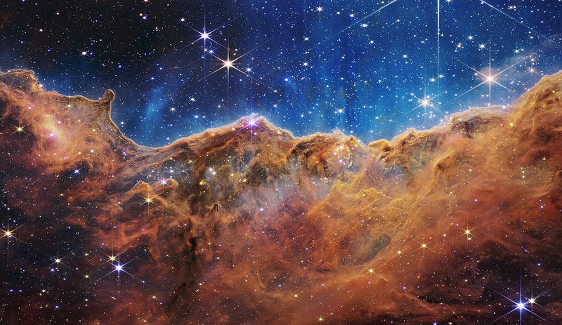
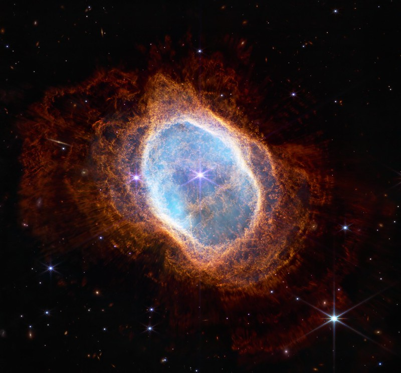
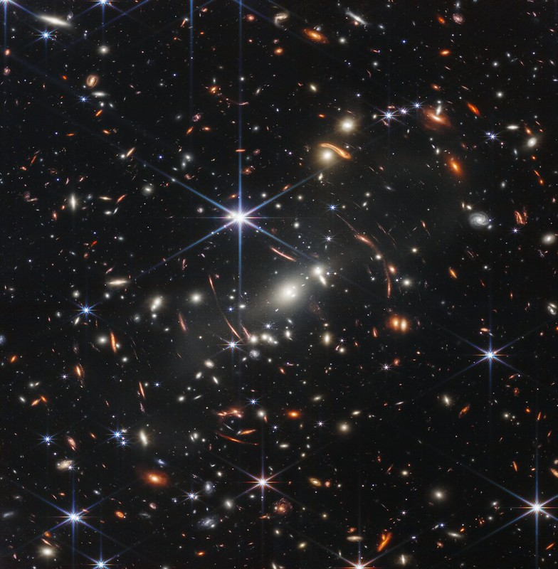
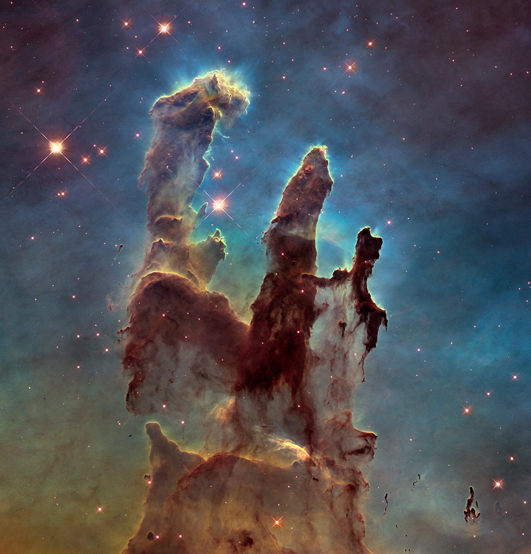

James Webb Telescope
The James Webb Space Telescope will find the first galaxies that formed in the early universe and peer through dusty clouds to see stars forming planetary systems.
Carina Nebula
The image is divided horizontally by an undulating line between a cloudscape forming a nebula along the bottom portion and a comparatively clear upper portion.
Southern Ring Nebula
A planetary nebula, seen by the Webb telescope’s NIRCam instrument, against the blackness of space, with points of starlight behind it.
Galaxies
The background of space is black. Thousands of galaxies appear all across the view. Their shapes and colors vary. Some are various shades of orange, others are white. Most stars appear blue, and are sometimes as large as more distant galaxies that appear next to them.
Eagles Nebula
This image shows the pillars as seen in visible light, capturing the multi-coloured glow of gas clouds, wispy tendrils of dark cosmic dust, and the rust-coloured elephants’ trunks of the nebula’s famous pillars.